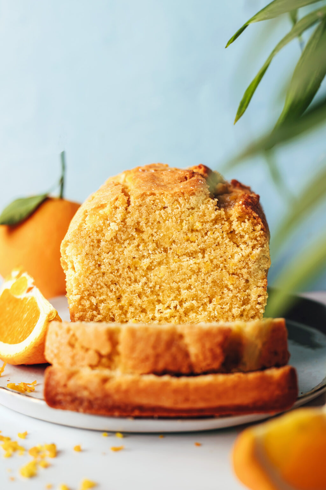

Gluten Free Orange Almond Loaf Cake

Description
Undetectably gluten-free and dairy-free orange almond cake! Perfectly sweet, moist, and zesty with an ideal crumb texture. Just 10 ingredients and 1 bowl required!
- 2/3 C Organic Cane Sugar
- 2-3 Tbsp Orange Zest
- 2 Large Eggs
- 1/3 C Orange Juice, Pulp free
- 1/3 C Olive Oil
- 1/4 tsp Almond Extract
- 2 C Almond Flour
- 3/4 C Potato Starch
- 1/3 C Brown Rice Flower
- 1 tsp Baking Powder
- 1/2 tsp Sea Salt
Instructions
- Preheat the oven to 325 degrees F (162 C), and line a standard size loaf pan with parchment paper.
- In a medium mixing bowl, whisk together the sugar and orange zest until well combined and fragrant. Add the eggs and whisk until well combined. Then add the orange juice, olive oil, and almond extract and whisk until smooth.
- Add the almond flour, potato starch, brown rice flour, baking powder, and salt and whisk to combine and break up any lumps of flour. The batter should be semi-thick but pourable.
- Transfer the batter to the prepared loaf pan, spread it out evenly with a spatula, and top with a sprinkle of cane sugar for a sparkly sweet touch (optional).
- Bake for 55-65 minutes, or until the top is lightly golden brown and a toothpick inserted into the center comes out clean.
- Let the cake cool in the pan for 15 minutes, then carefully lift from the pan with the parchment paper and let cool completely on a wire rack — about 1 hour. Once the cake is completely cooled, gently remove the parchment paper.
- Enjoy immediately with a cup of tea or some dairy-free milk! Store leftovers covered at room temperature for up to 2-3 days (we find it best within the first 1-2 days). Cake can be frozen for up to 1 month. Let thaw before slicing.
Back to Home